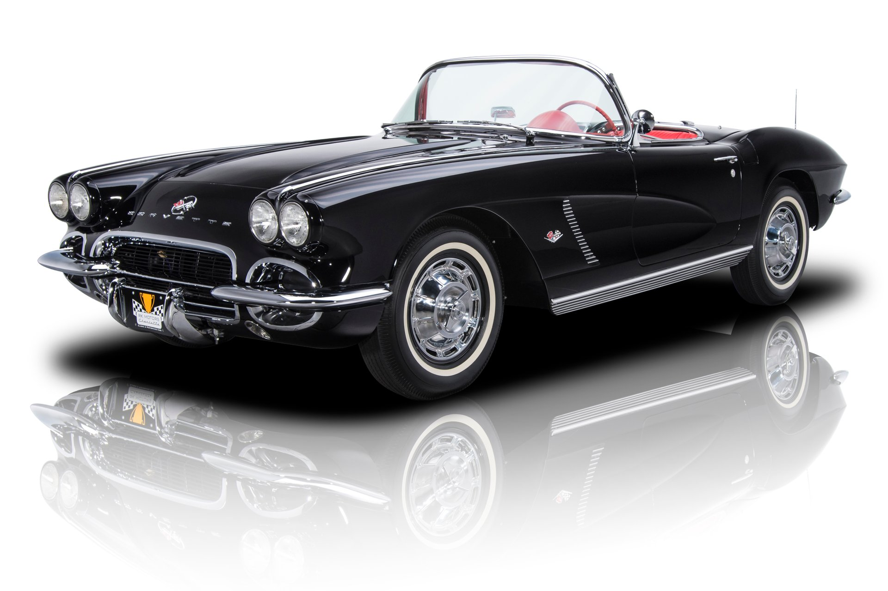
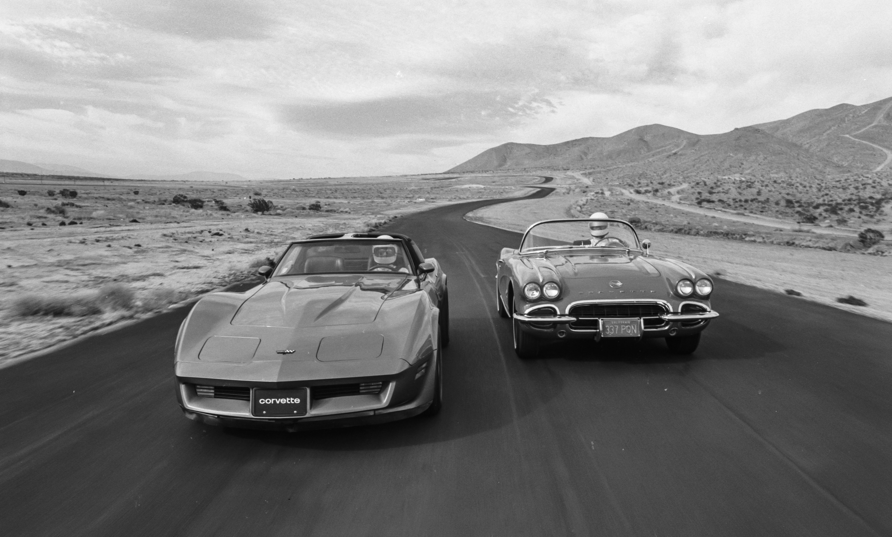

The 1962 Chevrolet Corvette stands as a timeless icon of American automotive design, embodying the spirit of the open road and the thrill of performance. With its sleek, aerodynamic styling and powerful V8 engine, this classic sports car captured the hearts of enthusiasts and collectors alike. Introduced during a period of automotive innovation and cultural change, the '62 Corvette showcased Chevrolet's commitment to pushing boundaries in both design and performance. Its distinctive body lines, highlighted by the iconic split rear window, made a bold statement on the road, setting it apart from other cars of its time.
Under the hood, the '62 Corvette boasted impressive performance credentials. Equipped with a range of V8 engine options, including the legendary 327 cubic inch powerplant, it delivered exhilarating acceleration and a throaty exhaust note that stirred the senses. Beyond its performance capabilities, the '62 Corvette offered a refined driving experience, with a comfortable interior adorned with premium materials and modern amenities for the era. Whether cruising along the coastline or tearing up the track, it provided drivers with a sense of freedom and adventure unmatched by any other car of its era.
Today, the 1962 Chevrolet Corvette remains a coveted collector's item, revered for its timeless design, exhilarating performance, and enduring legacy in automotive history. As a symbol of American ingenuity and craftsmanship, it continues to captivate enthusiasts around the world, ensuring its place in the pantheon of classic cars for generations to come.